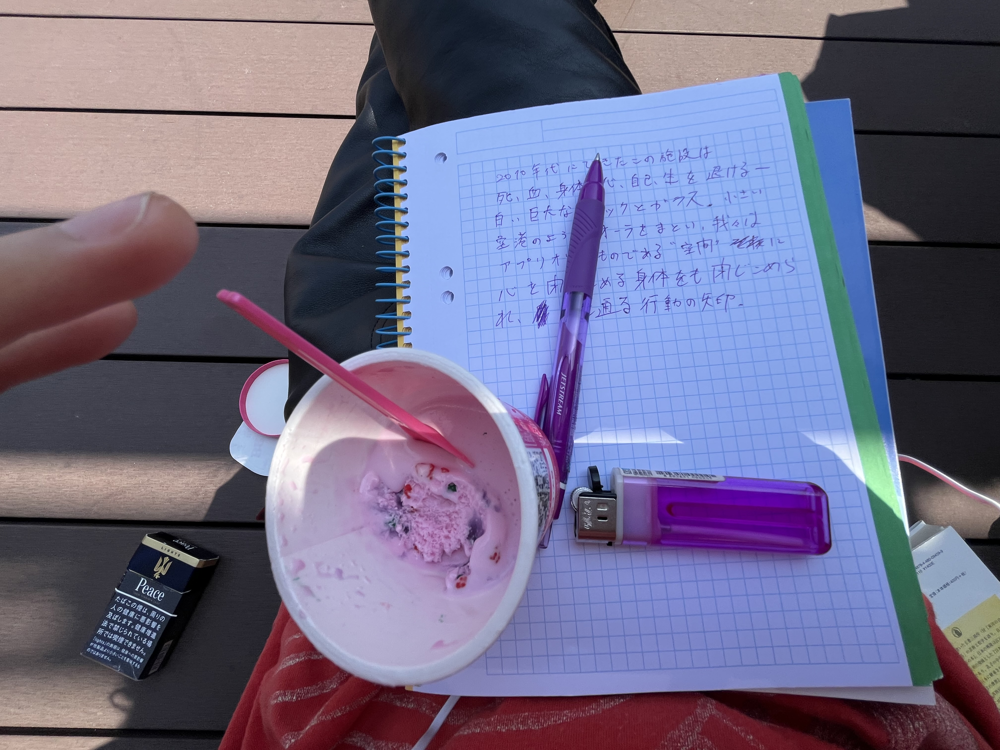
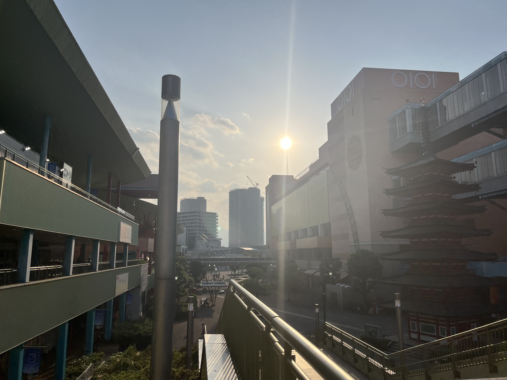

2月に返した免許は2万強と2日間の拘束をこえ今日帰ってくる。くるまが大好きPart2
part 1 は < https://allheroesband-create.github.io/weluvcars/ >
-----------------
3,2,1,,,,,,,
2010年代にできたこの施設は死、血、身体、心、自己、生を退ける ー 白い巨大なブロックとガラス。小さい空港のようなAuraをまとい、我々はアプリオリなものである"空間"に心を閉じ込める身体をも閉じ込められ、透き通る行動の矢印。
交通の世界に陥入しようと人々はこのブロックで学ぶのである。だけどロゴスは光である。この透明建築は光を多大に取り込みはするが、コンクリートは強固な素材だ。
ヌメヌメの闇に光が差し込む。それがSEXである。
この非性化された宮殿をカッティングするようにバルコニーがあり、空は四角く区切られていて、壁が一面だけ存在せずそのようにしてできた射出口の先には、青い空にびくともしない交通模型が広がる。大地の上に被さった綺麗に手入れされすぎた芝生に菜の花。カラスや鳩が集まっている。二俣川。
この統制された虚に集まり紫の煙を燻らすいろんなひとたち。お話ししたり空を見たり誰かとスマホで話したり何かを見たり無だったり。港町の潮風が信号機に停められるこのバルコニーでぼくの脳内ではPrinceが歌い、コットンキャンディのアイスクリーム、紫のインクとピンクの表紙。Light my Fire 韓国製のライターは火が高くまで上がる。

交通の世界は統制に向かっている。我々が三角形をハイスピードで紙にペンで刻みつける隙に、イーロンマスクの電脳機械は信号処理をもう済ませ、今は中国にいる。米中首脳会談。孔子は酸味の効いたサラダチキンを頬張った口でこういった。
「人焉廋哉、人焉廋哉」
だから我々は四つん這いで街を駆け、奇声をあげているのだ。透明の交通の脇で、歩道はもう車道に対する敗北感のモチーフではなく、透明交通世界に対するドロドロのまんこになるのだ。全ての物質化、奴隷化、産業世界、資本主義の先で悟ったのだ。
「楽しい方がいいじゃん！」
車と人が衝突してもまだ死には至らない前時代と、AIが衝突を回避する未来の隙間にあった、まどろみとバロウズの「クラッシュ」的倒錯の時代は終わるのだ。ぼくらは倒錯が前提にある上で純愛を探している。
光にちんこを握られながら、同時にちんこは輝く光である。そして君のpussyはoyuh素晴らしくて美しくて、闇だ。

イーロンマスクが思い描く透明交通世界が実現したなら、ぼくは思い切って車道で遊ぼうと思う。歩く人々が車道に飛び出せば、自動でその統制された透明な交通世界は止まってしまうのだ。白か黒、単色の訛った流線ボディの先端に付けられたカメラを目としてAIが車道で愛と戯れ遊ぶ僕らを見たときそれは、ぼくらを障害物としか認識できないのだろうか。とにかく素晴らしい。信号を待たずにもビートルズになれる。大河を渉るに利ろし！
ザクザク。霜を踏み締める音には未来の堅氷に包まれた大地の未来のモチーフが含まれる。霜を踏んだなら氷を予知し、暖かさを探さなければならなかった。親たちは知らんぷりした。
サクサクワーク
ザクザクザックバランな遊び人
そしてthug thugぎらついて、、、
カキーン！ついに2025-6の冬に堅氷が大地を覆う。
ぼくらはその氷の大地をアイススケートしてる。氷の下に眠る大洋は冷たく暗く、『ブラックフォン2』、悲しみの涙に包まれている。
ピキッ！
たくさんの遠くのものを見てきた遊びのファンタジスタがそれらを近くに引き寄せる。楽しむという情動に満ちた集中、向き合いによって、瞑想、禅の極致に対極から出会う。物質の中との共鳴、1つの近い世界へと辿り着く。あらゆる遠さが近くのこの世界に集まり、言葉の外で歓喜を讃えながら氷がひび割れる。
67！ Summer of Luv 2026-7
一閃ひび割れたアイスの裂け目から一斉に飛び出す眠りから醒めたGhostたち！できるBig Wave サーフボード片手にぼくらは、波のうねりを思い出し、波乗りを思い出す。忘却の喪失。
その大らかな無限の波に向かってテトラポッドを投げつけるのでなく、乗りこなすんだ。その先で会おうー大洋
無限に広がる海から陽が昇る。
LAのビーチに暖かく沈み込むまで。